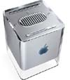
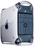
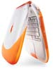
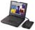

Lists at The Macintosh Guy
Note: This page serves as a historical archive for email discussion lists that were hosted on this site from 1996 to 2014. The email lists are no longer operating but the archives are available for future reference. Automator || The Automator list is a place to discuss Mac OS X Tiger's Automator, Automator workflows and actions. Dashboard || The Dashboard list is a place to discuss Mac OS X Tiger's Dashboard and Dashboard Widgets. MacGPS || The Mac GPS list is a place to discuss GPS (Global Positioning System) hardware and software on Macintosh. iMac List || The iMac list is a place to discuss the issues that relate to buying, using, maintaining, and troubleshooting Apple's iMac. G5 List || The G5 list is a place to discuss the issues that relate to buying, using, maintaining, and troubleshooting Macintosh computers with the new G5 processor. PowerBook || A list to discuss the issues that relate to buying, using, maintaining, and troubleshooting Apple's Macintosh PowerBook computers. Bluetooth || A list to discuss Bluetooth and Bluetooth peripherals as they relate to use on the Macintosh. Mac OS X Newbies || A list for help with installation, setup, basic finder use, troubleshooting for novice users of Mac OS X. Mac OS X Servers || A list for discussion of the built-in and third party servers for Mac OS X. Mac OS X Software || A list for discussion of the software applications for Mac OS X, native or classic, coco or carbon. Mac OS X Hardware || A list for discussion of use of hardware issues on Mac OS X including supported computers, hardware drivers, and configuration. Mac OS X Unix || A list for discussion of the unix underpinnings of Mac OS X, the command line, and discussion generally too geeky for the other lists.. Mac OS X Dreams || A list is focused on providing discussion around enhancements and feature requests for Mac OS X. This may include improvements to the OS itself, needed shareware, or improvements to existing software to take advantage of new features of Mac OS X. Everyone from end users to software developers are welcome.
Mac Professional Audio || A forum to discuss anything related to professional audio on the Macintosh. MIDI, music hardware and software, audio editing, and really any Macintosh based digital audio for music, film, or broadcast. iTunes || A forum to discuss the issues that relate to using, and troubleshooting Apple's iTunes and MP3 on the Mac in general. Titanium G4 || A forum for fans and users of Apple's new Titanuim G4 PowerBook. HomeMac || A forum for Macintosh users at home. Most anything related to non-professional hardware, applications that cost under $250, troubleshooting, productivity or the software that came with your Mac is fair game. BusMac || A forum for Macintosh users in a business enviornment. Most anything related to hardware, business sofware, troubleshooting, or productivity. MacCube || A forum for users and fans of the new Macintosh G4 Cube to discuss the issues that relate to using, maintaining, and troubleshooting Apple's new compact Macs. DigiCam || A forum for discussion of digital cameras of all kinds including still and video cameras. MacVoice || A place for discussion of everything having to do with speech recognition on the Macintosh. MacDV List || The MacDV list is a place for everything about digital video on the Macintosh. This includes software, hardware, techniques and troubleshooting. G4 List || The G4 list is a place to discuss the issues that relate to buying, using, maintaining, and troubleshooting Macintosh computers with the G4 processor. MacGames List || The MacGames list is a forum for Macintosh users to discuss gaming on the Macintosh including software, hardware and support. iBook List || The iBook list began as "CPortList", a place for speculation about the Apple iBook 9 months before it was anounced. July 20 1999, the iBook List was created out of the CPortList as a place to discuss the issues that relate to buying, using, maintaining, and troubleshooting Apple's new iBook. USB Talk List || The MacUSBTalk list is a forum for Macintosh users to discuss the Universal Serial Bus and its usage as they pertain to the Macintosh. Initially this discussion will be largely pertaining to the iMac but will expand as more Macs ship with USB ports. FireWire Talk List || The MacFireWireTalk list is a forum for Macintosh users to discuss FireWire, FireWire peripherals and its usage as it pertains to the Macintosh. PowerBook Duo/2400c List || The DuoList is a forum for users of Apple Macintosh PowerBook Duo series and the 2400c to discuss the issues that relate to using, maintaining, and troubleshooting Apple's subportable PowerBooks. Search the list archives: Lists hosted elsewhere. Low End Mac Lists || The email lists hosted by Daniel Knight are what inspired me to create my lists. Dan's lists have a great mix of technical expertise and help with real life Mac issues. Lists listed at Apple || Apple has a good listing of various Mac email lists including those hosted at Apple such as the EvangeList as well as many hosted elsewhere. You will also find a good section on Netiquette. This site, its source code, and the MacTips logo ©1996-2016 Eric Prentice. All other names, logos and images are copyright their respective owners. |
|